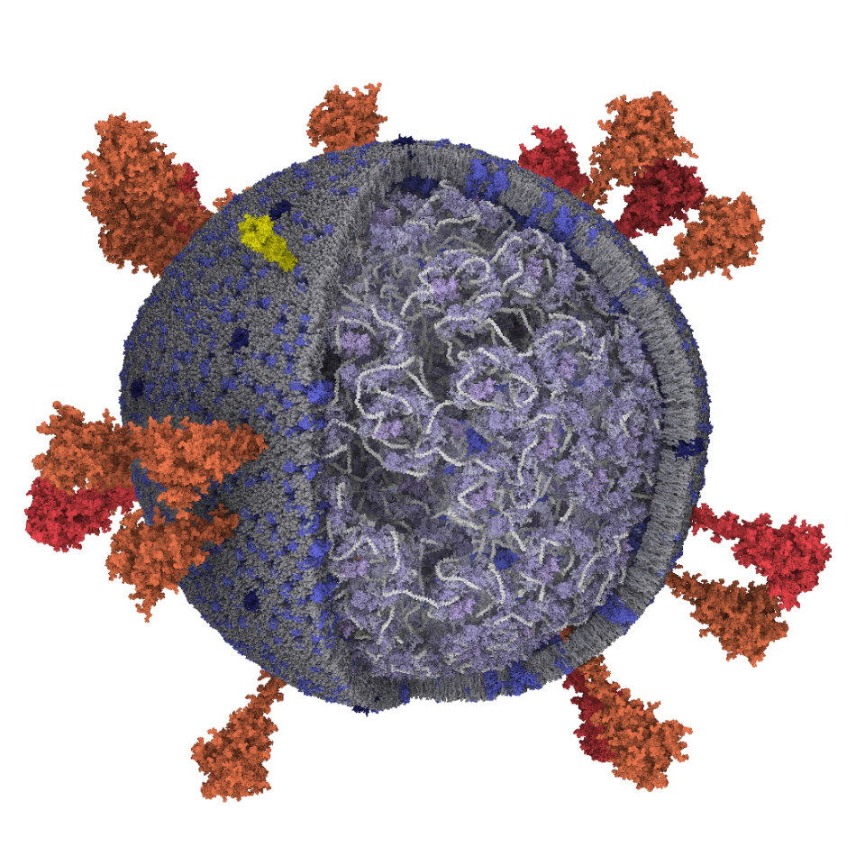
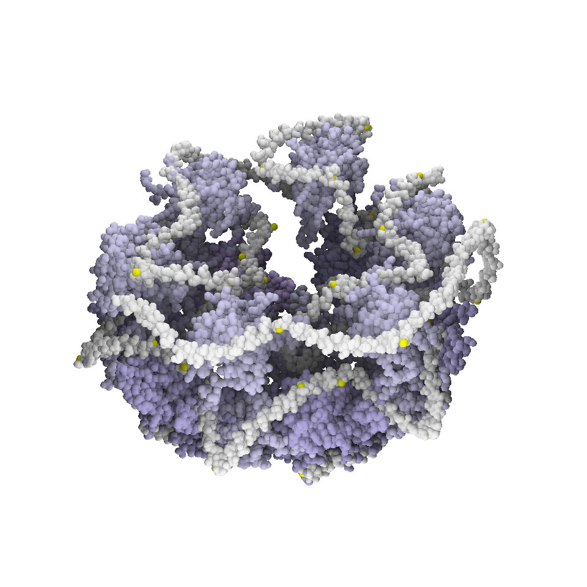
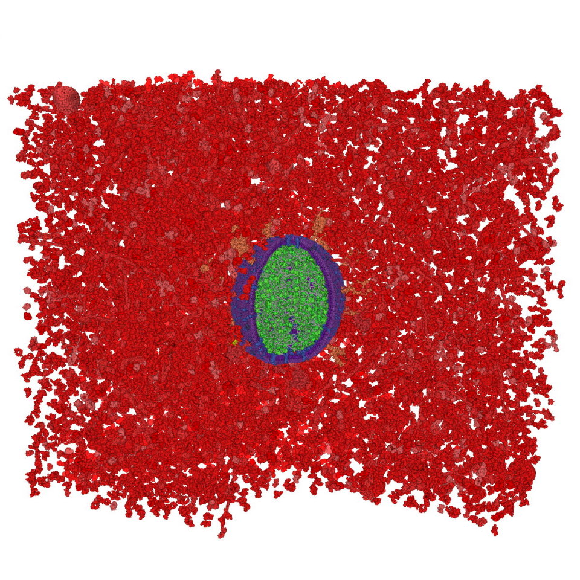

SARS-Cov-2

SARS-CoV-2 atomistic model

Internal "G" structure

SARS-CoV-2 atomistic model enclosed in blood plasma
Authors
Ngan Nguyen, Ondrej Strnad, Tobias Klein, Deng Luo, Ruwayda Alharbi, Peter Wonka, Martina Maritan, Peter Mindek, Ludovic Autin, David Goodsell, Ivan Viola.
Description
The latest version of the SARS-CoV-2 particle. The model was created using the MesoCraft tool. The membrane part of the model was created described in our paper. The internal part in this version of the model is based on work of Sai Li. The whole model consists of approx. 2000 proteins and 200000 lipids.